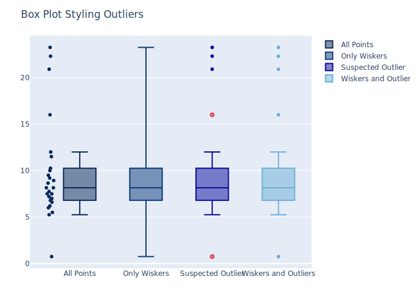
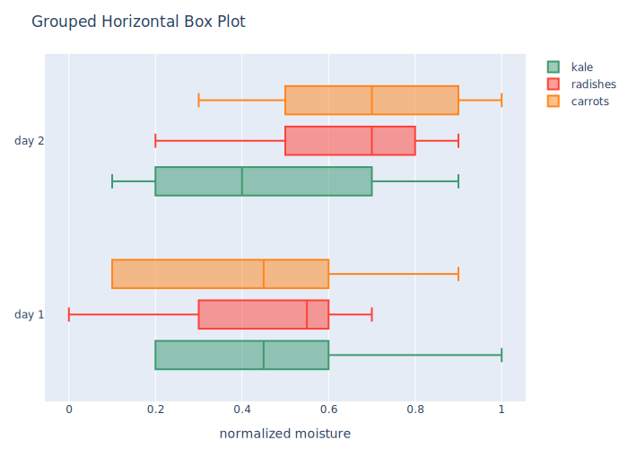
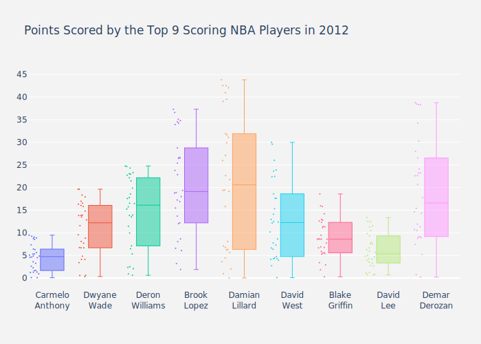
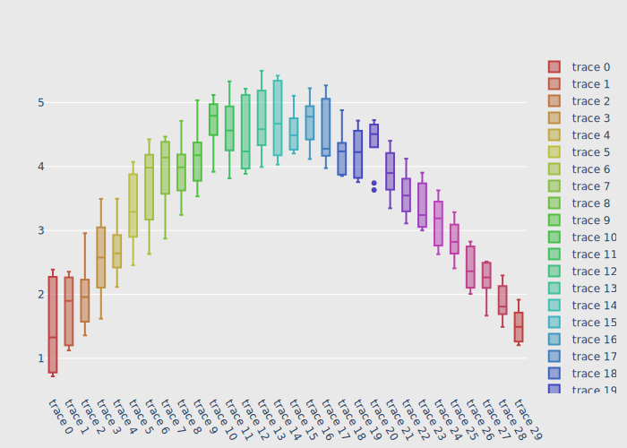

using PlotlyJS
function box1()
y0 = rand(50)
y1 = rand(50) .+ 1
trace1 = box(;y=y0)
trace2 = box(;y=y1)
data = [trace1, trace2]
plot(data)
end
box1()
; fill-opacity: 1;"/><defs id="defs-f60bf6"><g class="clips"><clipPath id="clipf60bf6xyplot" class="plotclip"><rect width="544" height="390"/></clipPath><clipPath class="axesclip" id="clipf60bf6x"><rect x="50" y="0" width="544" height="500"/></clipPath><clipPath class="axesclip" id="clipf60bf6y"><rect x="0" y="60" width="700" height="390"/></clipPath><clipPath class="axesclip" id="clipf60bf6xy"><rect x="50" y="60" width="544" height="390"/></clipPath></g><g class="gradients"/></defs><g class="bglayer"><rect class="bg" x="50" y="60" width="544" height="390" style="fill: rgb(229, 236, 246); fill-opacity: 1; stroke-width: 0;"/></g><g class="layer-below"><g class="imagelayer"/><g class="shapelayer"/></g><g class="cartesianlayer"><g class="subplot xy"><g class="layer-subplot"><g class="shapelayer"/><g class="imagelayer"/></g><g class="gridlayer"><g class="x"/><g class="y"><path class="ygrid crisp" transform="translate(0,343.06)" d="M50,0h544" style="stroke: rgb(255, 255, 255); stroke-opacity: 1; stroke-width: 1px;"/><path class="ygrid crisp" transform="translate(0,254.92)" d="M50,0h544" style="stroke: rgb(255, 255, 255); stroke-opacity: 1; stroke-width: 1px;"/><path class="ygrid crisp" transform="translate(0,166.78)" d="M50,0h544" style="stroke: rgb(255, 255, 255); stroke-opacity: 1; stroke-width: 1px;"/><path class="ygrid crisp" transform="translate(0,78.64)" d="M50,0h544" style="stroke: rgb(255, 255, 255); stroke-opacity: 1; stroke-width: 1px;"/></g></g><g class="zerolinelayer"><path class="yzl zl crisp" transform="translate(0,431.2)" d="M50,0h544" style="stroke: rgb(255, 255, 255); stroke-opacity: 1; stroke-width: 2px;"/></g><path class="xlines-below"/><path class="ylines-below"/><g class="overlines-below"/><g class="xaxislayer-below"/><g class="yaxislayer-below"/><g class="overaxes-below"/><g class="plot" transform="translate(50,60)" clip-path="url(%27%23clipf60bf6xyplot%27)"><g class="boxlayer mlayer"><g class="trace boxes" style="opacity: 1;"><path class="box" d="M69.36,281.44H202.64M69.36,329.12H202.64V246.97H69.36ZM136,329.12V370.5M136,246.97V197.5M102.68,370.5H169.32M102.68,197.5H169.32" style="vector-effect: non-scaling-stroke; stroke-width: 2px; stroke: rgb(99, 110, 250); stroke-opacity: 1; fill: rgb(99, 110, 250); fill-opacity: 0.5;"/><g class="points"/></g><g class="trace boxes" style="opacity: 1;"><path class="box" d="M341.36,114.76H474.64M341.36,154.3H474.64V72.08H341.36ZM408,154.3V191.66M408,72.08V19.5M374.68,191.66H441.32M374.68,19.5H441.32" style="vector-effect: non-scaling-stroke; stroke-width: 2px; stroke: rgb(239, 85, 59); stroke-opacity: 1; fill: rgb(239, 85, 59); fill-opacity: 0.5;"/><g class="points"/></g></g></g><g class="overplot"/><path class="xlines-above crisp" d="M0,0" style="fill: none;"/><path class="ylines-above crisp" d="M0,0" style="fill: none;"/><g class="overlines-above"/><g class="xaxislayer-above"><g class="xtick"><text text-anchor="middle" x="0" y="463" transform="translate(186,0)" style="font-family: %27Open Sans%27, verdana, arial, sans-serif; font-size: 12px; fill: rgb(42, 63, 95); fill-opacity: 1; white-space: pre;">trace 0</text></g><g class="xtick"><text text-anchor="middle" x="0" y="463" transform="translate(458,0)" style="font-family: %27Open Sans%27, verdana, arial, sans-serif; font-size: 12px; fill: rgb(42, 63, 95); fill-opacity: 1; white-space: pre;">trace 1</text></g></g><g class="yaxislayer-above"><g class="ytick"><text text-anchor="end" x="49" y="4.199999999999999" transform="translate(0,431.2)" style="font-family: %27Open Sans%27, verdana, arial, sans-serif; font-size: 12px; fill: rgb(42, 63, 95); fill-opacity: 1; white-space: pre;">0</text></g><g class="ytick"><text text-anchor="end" x="49" y="4.199999999999999" transform="translate(0,343.06)" style="font-family: %27Open Sans%27, verdana, arial, sans-serif; font-size: 12px; fill: rgb(42, 63, 95); fill-opacity: 1; white-space: pre;">0.5</text></g><g class="ytick"><text text-anchor="end" x="49" y="4.199999999999999" transform="translate(0,254.92)" style="font-family: %27Open Sans%27, verdana, arial, sans-serif; font-size: 12px; fill: rgb(42, 63, 95); fill-opacity: 1; white-space: pre;">1</text></g><g class="ytick"><text text-anchor="end" x="49" y="4.199999999999999" transform="translate(0,166.78)" style="font-family: %27Open Sans%27, verdana, arial, sans-serif; font-size: 12px; fill: rgb(42, 63, 95); fill-opacity: 1; white-space: pre;">1.5</text></g><g class="ytick"><text text-anchor="end" x="49" y="4.199999999999999" transform="translate(0,78.64)" style="font-family: %27Open Sans%27, verdana, arial, sans-serif; font-size: 12px; fill: rgb(42, 63, 95); fill-opacity: 1; white-space: pre;">2</text></g></g><g class="overaxes-above"/></g></g><g class="polarlayer"/><g class="ternarylayer"/><g class="geolayer"/><g class="funnelarealayer"/><g class="pielayer"/><g class="treemaplayer"/><g class="sunburstlayer"/><g class="glimages"/><defs id="topdefs-f60bf6"><g class="clips"/><clipPath id="legendf60bf6"><rect width="83" height="48" x="0" y="0"/></clipPath></defs><g class="layer-above"><g class="imagelayer"/><g class="shapelayer"/></g><g class="infolayer"><g class="legend" pointer-events="all" transform="translate(604.88,60)"><rect class="bg" shape-rendering="crispEdges" width="83" height="48" x="0" y="0" style="stroke: rgb(68, 68, 68); stroke-opacity: 1; fill: rgb(255, 255, 255); fill-opacity: 1; stroke-width: 0px;"/><g class="scrollbox" transform="" clip-path="url(%27%23legendf60bf6%27)"><g class="groups"><g class="traces" transform="translate(0,14.5)" style="opacity: 1;"><text class="legendtext" text-anchor="start" x="40" y="4.680000000000001" style="font-family: %27Open Sans%27, verdana, arial, sans-serif; font-size: 12px; fill: rgb(42, 63, 95); fill-opacity: 1; white-space: pre;">trace 0</text><g class="layers" style="opacity: 1;"><g class="legendfill"/><g class="legendlines"/><g class="legendsymbols"><g class="legendpoints"><path class="legendbox" d="M6,6H-6V-6H6Z" transform="translate(20,0)" style="stroke-width: 2px; fill: rgb(99, 110, 250); fill-opacity: 0.5; stroke: rgb(99, 110, 250); stroke-opacity: 1;"/></g></g></g><rect class="legendtoggle" x="0" y="-9.5" width="77.015625" height="19" style="fill: rgb(0, 0, 0); fill-opacity: 0;"/></g><g class="traces" transform="translate(0,33.5)" style="opacity: 1;"><text class="legendtext" text-anchor="start" x="40" y="4.680000000000001" style="font-family: %27Open Sans%27, verdana, arial, sans-serif; font-size: 12px; fill: rgb(42, 63, 95); fill-opacity: 1; white-space: pre;">trace 1</text><g class="layers" style="opacity: 1;"><g class="legendfill"/><g class="legendlines"/><g class="legendsymbols"><g class="legendpoints"><path class="legendbox" d="M6,6H-6V-6H6Z" transform="translate(20,0)" style="stroke-width: 2px; fill: rgb(239, 85, 59); fill-opacity: 0.5; stroke: rgb(239, 85, 59); stroke-opacity: 1;"/></g></g></g><rect class="legendtoggle" x="0" y="-9.5" width="77.015625" height="19" style="fill: rgb(0, 0, 0); fill-opacity: 0;"/></g></g></g><rect class="scrollbar" rx="20" ry="3" width="0" height="0" x="0" y="0" style="fill: rgb(128, 139, 164); fill-opacity: 1;"/></g><g class="g-gtitle"/><g class="g-xtitle"/><g class="g-ytitle"/></g></svg>)
function box2()
data = box(;y=[0, 1, 1, 2, 3, 5, 8, 13, 21],
boxpoints="all",
jitter=0.3,
pointpos=-1.8)
plot(data)
end
box2()
function box3()
trace1 = box(;x=[1, 2, 3, 4, 4, 4, 8, 9, 10],
name="Set 1")
trace2 = box(;x=[2, 3, 3, 3, 3, 5, 6, 6, 7],
name="Set 2")
data = [trace1, trace2]
layout = Layout(;title="Horizontal Box Plot")
plot(data, layout)
end
box3()
function box4()
x0 = ["day 1", "day 1", "day 1", "day 1", "day 1", "day 1",
"day 2", "day 2", "day 2", "day 2", "day 2", "day 2"]
trace1 = box(;y=[0.2, 0.2, 0.6, 1.0, 0.5, 0.4, 0.2, 0.7, 0.9, 0.1, 0.5, 0.3],
x=x0,
name="kale",
marker_color="#3D9970")
trace2 = box(;y=[0.6, 0.7, 0.3, 0.6, 0.0, 0.5, 0.7, 0.9, 0.5, 0.8, 0.7, 0.2],
x=x0,
name="radishes",
marker_color="#FF4136")
trace3 = box(;y=[0.1, 0.3, 0.1, 0.9, 0.6, 0.6, 0.9, 1.0, 0.3, 0.6, 0.8, 0.5],
x=x0,
name="carrots",
marker_color="#FF851B")
data = [trace1, trace2, trace3]
layout = Layout(;yaxis=attr(title="normalized moisture", zeroline=false),
boxmode="group")
plot(data, layout)
end
box4()
function box5()
trace1 = box(;y=[0.75, 5.25, 5.5, 6, 6.2, 6.6, 6.80, 7.0, 7.2, 7.5, 7.5,
7.75, 8.15, 8.15, 8.65, 8.93, 9.2, 9.5, 10, 10.25, 11.5,
12, 16, 20.90, 22.3, 23.25],
name="All Points",
jitter=0.3,
pointpos=-1.8,
marker_color="rgb(7, 40, 89)",
boxpoints="all")
trace2 = box(;y=[0.75, 5.25, 5.5, 6, 6.2, 6.6, 6.80, 7.0, 7.2, 7.5, 7.5,
7.75, 8.15, 8.15, 8.65, 8.93, 9.2, 9.5, 10, 10.25, 11.5,
12, 16, 20.90, 22.3, 23.25],
name="Only Wiskers",
marker_color="rgb(9, 56, 125)",
boxpoints=false)
trace3 = box(;y=[0.75, 5.25, 5.5, 6, 6.2, 6.6, 6.80, 7.0, 7.2, 7.5, 7.5,
7.75, 8.15, 8.15, 8.65, 8.93, 9.2, 9.5, 10, 10.25, 11.5,
12, 16, 20.90, 22.3, 23.25],
name="Suspected Outlier",
marker=attr(color="rgb(8, 8, 156)",
outliercolor="rgba(219, 64, 82, 0.6)",
line=attr(outliercolor="rgba(219, 64, 82, 1.0)",
outlierwidth=2)),
boxpoints="suspectedoutliers")
trace4 = box(;y=[0.75, 5.25, 5.5, 6, 6.2, 6.6, 6.80, 7.0, 7.2, 7.5, 7.5,
7.75, 8.15, 8.15, 8.65, 8.93, 9.2, 9.5, 10, 10.25, 11.5,
12, 16, 20.90, 22.3, 23.25],
name="Wiskers and Outliers",
marker_color="rgb(107, 174, 214)",
boxpoints="Outliers")
data = [trace1, trace2, trace3, trace4]
layout = Layout(;title="Box Plot Styling Outliers")
plot(data, layout)
end
box5()
function box6()
trace1 = box(;y=[2.37, 2.16, 4.82, 1.73, 1.04, 0.23, 1.32, 2.91, 0.11,
4.51, 0.51, 3.75, 1.35, 2.98, 4.50, 0.18, 4.66, 1.30,
2.06, 1.19],
name="Only Mean",
marker_color="rgb(8, 81, 156)",
boxmean=true)
trace2 = box(;y=[2.37, 2.16, 4.82, 1.73, 1.04, 0.23, 1.32, 2.91, 0.11,
4.51, 0.51, 3.75, 1.35, 2.98, 4.50, 0.18, 4.66, 1.30,
2.06, 1.19],
name="Mean and Standard Deviation",
marker_color="rgb(10, 140, 208)",
boxmean="sd")
data = [trace1, trace2]
layout = Layout(;title="Box Plot Styling Mean and Standard Deviation")
plot(data, layout)
end
box6()
function box7()
y0 = ["day 1", "day 1", "day 1", "day 1", "day 1", "day 1",
"day 2", "day 2", "day 2", "day 2", "day 2", "day 2"]
trace1 = box(;x=[0.2, 0.2, 0.6, 1.0, 0.5, 0.4, 0.2, 0.7, 0.9, 0.1, 0.5, 0.3],
y=y0,
name="kale",
marker_color="#3D9970",
boxmean=false,
orientation="h")
trace2 = box(;x=[0.6, 0.7, 0.3, 0.6, 0.0, 0.5, 0.7, 0.9, 0.5, 0.8, 0.7, 0.2],
y=y0,
name="radishes",
marker_color="#FF4136",
boxmean=false,
orientation="h")
trace3 = box(;x=[0.1, 0.3, 0.1, 0.9, 0.6, 0.6, 0.9, 1.0, 0.3, 0.6, 0.8, 0.5],
y=y0,
name="carrots",
marker_color="#FF851B",
boxmean=false,
orientation="h")
data = [trace1, trace2, trace3]
layout = Layout(;title="Grouped Horizontal Box Plot",
xaxis=attr(title="normalized moisture", zeroline=false),
boxmode="group")
plot(data, layout)
end
box7()
function box8()
trace1 = box(;y=[1, 2, 3, 4, 4, 4, 8, 9, 10],
name="Sample A",
marker_color="rgb(214, 12, 140)")
trace2 = box(;y=[2, 3, 3, 3, 3, 5, 6, 6, 7],
name="Sample B",
marker_color="rgb(0, 128, 128)")
data = [trace1, trace2]
layout = Layout(;title="Colored Box Plot")
plot(data, layout)
end
box8()
function box9()
xData = ["Carmelo<br>Anthony", "Dwyane<br>Wade", "Deron<br>Williams",
"Brook<br>Lopez", "Damian<br>Lillard", "David<br>West",
"Blake<br>Griffin", "David<br>Lee", "Demar<br>Derozan"]
_getrandom(num, mul) = mul .* rand(num)
yData = Array[
_getrandom(30, 10),
_getrandom(30, 20),
_getrandom(30, 25),
_getrandom(30, 40),
_getrandom(30, 45),
_getrandom(30, 30),
_getrandom(30, 20),
_getrandom(30, 15),
_getrandom(30, 43)
]
colors = ["rgba(93, 164, 214, 0.5)", "rgba(255, 144, 14, 0.5)",
"rgba(44, 160, 101, 0.5)", "rgba(255, 65, 54, 0.5)",
"rgba(207, 114, 255, 0.5)", "rgba(127, 96, 0, 0.5)",
"rgba(255, 140, 184, 0.5)", "rgba(79, 90, 117, 0.5)",
"rgba(222, 223, 0, 0.5)"]
data = GenericTrace[]
for i in 1:length(xData)
trace = box(;y=yData[i],
name=xData[i],
boxpoints="all",
jitter=0.5,
whiskerwidth=0.2,
fillcolor="cls",
marker_size=2,
line_width=1)
push!(data, trace)
end
t = "Points Scored by the Top 9 Scoring NBA Players in 2012"
layout = Layout(;title=t,
yaxis=attr(autorange=true, showgrid=true, zeroline=true,
dtick=5, gridcolor="rgb(255, 255, 255)",
gridwidth=1,
zerolinecolor="rgb(255, 255, 255)",
zerolinewidth=2),
margin=attr(l=40, r=30, b=80, t=100),
paper_bgcolor="rgb(243, 243, 243)",
plot_bgcolor="rgb(243, 243, 243)",
showlegend=false)
plot(data, layout)
end
box9()
function box10()
n_box = 30
colors = ["hsl($i, 50%, 50%)" for i in range(0, stop=360, length=n_box)]
gen_y_data(i) =
(3.5*sin(pi*i/n_box) + i/n_box) .+ (1.5+0.5*cos(pi*i/n_box)).*rand(10)
ys = Array[gen_y_data(i) for i in 1:n_box]
# Create Traces
data = GenericTrace[box(y=y, marker_color=mc) for (y, mc) in zip(ys, colors)]
#Format the layout
layout = Layout(;xaxis=attr(;showgrid=false, zeroline=false,
tickangle=60, showticklabels=true),
yaxis=attr(;zeroline=false, gridcolor="white"),
paper_bgcolor="rgb(233, 233, 233)",
plot_bgcolor="rgb(233, 233, 233)",
showlegend=true)
plot(data, layout)
end
box10()
